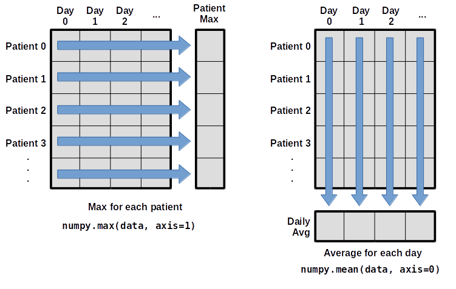

Hands-on 01a: Introduction
Contents
Hands-on 01a: Introduction#
Some helpful links:
Python (https://docs.python.org/3.9/tutorial/index.html): an introduction to the Python programming language
Google Colab (https://colab.research.google.com/): for Python development in your web-browser
Miniconda (https://docs.conda.io/en/latest/miniconda.html): a free minimal installer for conda
Numpy (https://numpy.org/doc/stable/user/quickstart.html): a widely used library for mathematical operations in Python
Keras (https://keras.io/): a beginner-friendly deep learning library used in these exercises
TensorFlow (https://www.tensorflow.org/): a useful backend for deep learning development
Scikit-learn (https://scikit-learn.org/stable/): helpful machine learning library
Seaborn (https://seaborn.pydata.org/): a library for creating nice looking graphs and figures
Numpy array basics#
The basic data strucutre is a numpy array
# Import Numpy
import numpy as np
# Define a 1D array (i.e. a vector)
x = np.array([1, 2, 3, 4])
# Check the "shape" of the array
x.shape
(4,)
# Define a 2D array (i.e. a matrix)
w = np.array([[1, 2, 3, 4], [1, 2, 3, 4]])
# Check the shape of w
w.shape
(2, 4)
# Do a matrix multiplication
out = np.matmul(w, x)
# Note, this is the same
out = w @ x
out.shape
(2,)
Loading data with Numpy#
data = np.loadtxt(fname="data/inflammation-01.csv", delimiter=",")
print(data)
[[0. 0. 1. ... 3. 0. 0.]
[0. 1. 2. ... 1. 0. 1.]
[0. 1. 1. ... 2. 1. 1.]
...
[0. 1. 1. ... 1. 1. 1.]
[0. 0. 0. ... 0. 2. 0.]
[0. 0. 1. ... 1. 1. 0.]]
The expression np.loadtxt(...) is a function call that asks Python to run the function] loadtxt that
belongs to the NumPy library.
The dot notation in Python is used most of all as an object attribute/property specifier or for invoking its method.
object.property will give you the object.property value, object_name.method() will invoke on object_name method.
np.loadtxt has two parameters: the name of the file we want to read and the delimiter that separates values on a line.
These both need to be character strings (or strings for short), so we put them in quotes.
By default, only a few rows and columns are shown (with ... to omit elements when displaying big arrays).
Note that, to save space when displaying NumPy arrays, Python does not show us trailing zeros, so 1.0 becomes 1..
# Let's print out some features of this data
print(type(data))
print(data.dtype)
print(data.shape)
<class 'numpy.ndarray'>
float64
(60, 40)
The output tells us that the data array variable contains 60 rows and 40 columns.
When we created the variable data to store our arthritis data, we did not only create the array; we also
created information about the array, called members or attributes.
data.shape is an attribute of data which describes the dimensions of data.
If we want to get a single number from the array, we must provide an index in square brackets after the variable name, just as we do in math when referring to an element of a matrix.
Our inflammation data has two dimensions, so we will need to use two indices to refer to one specific value:
print(f"first value in data: {data[0, 0]}")
first value in data: 0.0
print(f"middle value in data: {data[30, 20]}")
middle value in data: 13.0
The expression data[30, 20] accesses the element at row 30, column 20, while data[0, 0] accesses the element at row 0, column 0.
Languages in the C family (including C++, Java, Perl, and Python) count from 0 because it represents an offset from the first value in the array (the second value is offset by one index from the first value).
As a result, if we have an \(M\times N\) array in Python, its indices go from \(0\) to \(M-1\) on the first axis and \(0\) to \(N-1\) on the second.
!["data" is a 3 by 3 numpy array containing row 0: ['A', 'B', 'C'], row 1: ['D', 'E', 'F'], androw 2: ['G', 'H', 'I']. Starting in the upper left hand corner, data[0, 0] = 'A', data[0, 1] = 'B', data[0, 2] = 'C', data[1, 0] = 'D', data[1, 1] = 'E', data[1, 2] = 'F', data[2, 0] = 'G', data[2, 1] = 'H', and data[2, 2] = 'I', in the bottom right hand corner.](_images/python-zero-index.svg)
When Python displays an array, it shows the element with index [0, 0] in the upper left corner rather than the lower left.
This is consistent with the way mathematicians draw matrices but different from the Cartesian coordinates.
The indices are (row, column) instead of (column, row) for the same reason, which can be confusing when plotting data.
Slicing data#
An index like [30, 20] selects a single element of an array, but we can select whole sections as well.
For example, we can select the first ten days (columns) of values for the first four patients (rows) like this:
print(data[0:4, 0:10])
[[0. 0. 1. 3. 1. 2. 4. 7. 8. 3.]
[0. 1. 2. 1. 2. 1. 3. 2. 2. 6.]
[0. 1. 1. 3. 3. 2. 6. 2. 5. 9.]
[0. 0. 2. 0. 4. 2. 2. 1. 6. 7.]]
The slice 0:4 means, “Start at index 0 and go up to, but not including, index 4”.
The difference between the upper and lower bounds is the number of values in the slice.
We don’t have to start slices at 0:
print(data[5:10, 0:10])
[[0. 0. 1. 2. 2. 4. 2. 1. 6. 4.]
[0. 0. 2. 2. 4. 2. 2. 5. 5. 8.]
[0. 0. 1. 2. 3. 1. 2. 3. 5. 3.]
[0. 0. 0. 3. 1. 5. 6. 5. 5. 8.]
[0. 1. 1. 2. 1. 3. 5. 3. 5. 8.]]
We also don’t have to include the upper and lower bound on the slice.
If we don’t include the lower bound, Python uses 0 by default; if we don’t include the upper, the slice runs to the end of the axis, and if we don’t include either (i.e., if we use : on its own), the slice includes everything:
small = data[:3, 36:]
print(f"small is:\n{small}")
small is:
[[2. 3. 0. 0.]
[1. 1. 0. 1.]
[2. 2. 1. 1.]]
The above example selects rows 0 through 2 and columns 36 through to the end of the array.
Analyzing data#
NumPy has several useful functions that take an array as input to perform operations on its values.
If we want to find the average inflammation for all patients on
all days, for example, we can ask NumPy to compute data’s mean value:
mean_over_patients_and_days = np.mean(data)
print(mean_over_patients_and_days)
6.14875
When analyzing data, though, we often want to look at variations in statistical values, such as the maximum inflammation per patient or the average inflammation per day. One way to do this is to create a new temporary array of the data we want, then ask it to do the calculation:
What if we need the maximum inflammation for each patient over all days (as in the next diagram on the left) or the average for each day (as in the diagram on the right)? As the diagram below shows, we want to perform the operation across an axis:

To support this functionality, most array functions allow us to specify the axis we want to work on. If we ask for the average across axis 0 (rows in our 2D example), we get:
mean_over_patients = np.mean(data, axis=0)
print(mean_over_patients)
print(mean_over_patients.shape)
[ 0. 0.45 1.11666667 1.75 2.43333333 3.15
3.8 3.88333333 5.23333333 5.51666667 5.95 5.9
8.35 7.73333333 8.36666667 9.5 9.58333333 10.63333333
11.56666667 12.35 13.25 11.96666667 11.03333333 10.16666667
10. 8.66666667 9.15 7.25 7.33333333 6.58333333
6.06666667 5.95 5.11666667 3.6 3.3 3.56666667
2.48333333 1.5 1.13333333 0.56666667]
(40,)
The expression (40,) tells us we have a \(40\times 1\) vector, so this is the average inflammation per day for all patients.
If we average across axis 1 (columns in our 2D example), we get:
mean_over_days = np.mean(data, axis=1)
print(mean_over_days)
[5.45 5.425 6.1 5.9 5.55 6.225 5.975 6.65 6.625 6.525 6.775 5.8
6.225 5.75 5.225 6.3 6.55 5.7 5.85 6.55 5.775 5.825 6.175 6.1
5.8 6.425 6.05 6.025 6.175 6.55 6.175 6.35 6.725 6.125 7.075 5.725
5.925 6.15 6.075 5.75 5.975 5.725 6.3 5.9 6.75 5.925 7.225 6.15
5.95 6.275 5.7 6.1 6.825 5.975 6.725 5.7 6.25 6.4 7.05 5.9 ]
which is the average inflammation per patient across all days.
Visualizing data#
Visualization deserves an entire lecture of its own, but we can explore a few features of Python’s matplotlib library here.
While there is no official plotting library, matplotlib is the de facto standard.
First, we will import the pyplot module from matplotlib and use two of its functions to create and display a heat map of our data:
import matplotlib.pyplot as plt
# Note: origin="lower" keyword argument ("upper" is the default)
image = plt.imshow(data, origin="lower")
cbar = plt.colorbar()
# always add axis labels (and units, if appropriate)
plt.ylabel("Patient")
plt.xlabel("Day")
cbar.set_label("Inflammation")
plt.show()
Each row in the heat map corresponds to a patient in the clinical trial dataset, and each column corresponds to a day in the dataset. Blue pixels in this heat map represent low values, while yellow pixels represent high values. As we can see, the general number of inflammation flare-ups for the patients rises and falls over a 40-day period.
So far so good as this is in line with our knowledge of the clinical trial and Dr. Maverick’s claims:
the patients take their medication once their inflammation flare-ups begin
it takes around 3 weeks for the medication to take effect and begin reducing flare-ups
and flare-ups appear to drop to zero by the end of the clinical trial.
Now let’s take a look at the average inflammation over time:
ave_inflammation = np.mean(data, axis=0)
# Note: drawstyle="steps-mid" to reflect discrete nature of data
ave_plot = plt.plot(ave_inflammation, drawstyle="steps-mid")
plt.ylabel("Average inflammation")
plt.xlabel("Day")
plt.show()
Here, we have put the average inflammation per day across all patients in the variable ave_inflammation, then asked matplotlib.pyplot to create and display a line graph of those values.
The result is a reasonably linear rise and fall, in line with Dr. Maverick’s claim that the medication takes 3 weeks to take effect.
But a good data scientist doesn’t just consider the average of a dataset, so let’s have a look at two other statistics:
max_plot = plt.plot(np.max(data, axis=0), drawstyle="steps-mid")
plt.xlabel("Day")
plt.ylabel("Maximum inflammation")
plt.show()
min_plot = plt.plot(np.min(data, axis=0), drawstyle="steps-mid")
plt.xlabel("Day")
plt.ylabel("Minimum inflammation")
plt.show()
The maximum value rises and falls linearly, while the minimum seems to be a step function. Neither trend seems particularly likely, so either there’s a mistake in our calculations or something is wrong with our data. This insight would have been difficult to reach by examining the numbers themselves without visualization tools.
Make your own plot#
Create a plot showing the standard deviation (numpy.std)
of the inflammation data for each day across all patients.
# Your code here